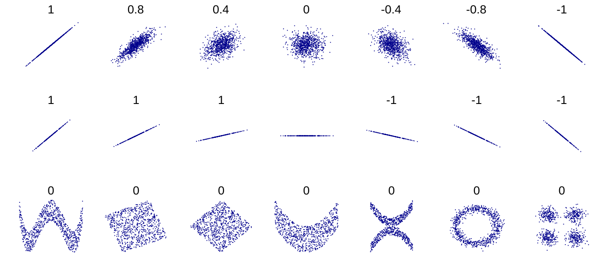

데이터로 세상 읽기
지금 바로 이해할 수 있는 내용
무엇을 착각하는지, 왜 위험한지, 손으로 확인할 수 있는 작은 예시로 설명합니다. 수식을 쓰지 않으며 사칙연산과 평균만 알면 읽을 수 있습니다. 실제 데이터로 확인한 결과도 여기에 있습니다.
숫자와 계산이 모두 맞아도 결론은 틀릴 수 있습니다. 누구를 골랐는지, 무엇을 한 번으로 셌는지, 어떤 집단을 합쳤는지에 따라 숫자의 뜻이 달라지기 때문입니다. 실제 기록으로 그런 사례들을 살펴봅니다.
내용을 데이터로 세상 읽기와 깊이 살펴보기로 나눠 두었습니다. 지금 필요한 것만 골라 볼 수 있습니다.
무엇을 착각하는지, 왜 위험한지, 손으로 확인할 수 있는 작은 예시로 설명합니다. 수식을 쓰지 않으며 사칙연산과 평균만 알면 읽을 수 있습니다. 실제 데이터로 확인한 결과도 여기에 있습니다.
같은 현상을 기호와 수식으로 정리합니다. 분산, 표준오차, 상관계수, 조건부 기대값이 나옵니다. 지금 당장 몰라도 됩니다. 기초 통계학을 배워 가면서 다시 돌아와 읽으면, 데이터로 세상 읽기에서 말로 설명한 내용이 어떤 식으로 정확해지는지 보입니다.
깊이 살펴보기 박스는 보라색 왼쪽 선으로 표시됩니다. 본문 중간에 심화학습 표시가 붙은 용어도 같은 뜻입니다.
지금은 데이터로 세상 읽기만 보고 있습니다. 수식이 들어간 설명은 접혀 있습니다.
| 함정 | 한 줄 경고 | 관련된 역설 |
|---|---|---|
| 1. 전후 비교 | 좋아졌다는 사실만으로 원인을 알 수 없다 | 평균으로의 회귀 |
| 2. 표본의 출처 | 무엇을 뽑아 셌는지에 따라 평균이 달라진다 | 검사 역설, 범위 제한 |
| 3. 전체와 집단별 비교 | 나눠 볼 때와 합쳐 볼 때 결과가 다를 수 있다 | 심슨의 역설, 윌 로저스 현상 |
이 자료는 가상 데이터를 쓰지 않습니다. 데이터로 세상 읽기의 수치는 모두 2025 KBO 한 시즌 전체 기록(720경기 · 56,139타석 · 217,970투구)에서 직접 계산했고, 깊이 살펴보기의 확장 예제는 갈턴이 1886년에 수집한 아버지–아들 키 자료(465쌍) 원본을 씁니다. 예외는 손으로 검증하는 산술 예시와, 상관 설명에 인용한 위키미디어 공용의 예시 그림뿐이며 두 경우 모두 그 자리에 실제 데이터가 아니라고 밝혔습니다.
프로그램은 가정이지만 성적은 실제 기록입니다. 같은 기간 전반기 상위 10명은 아무 조치도 받지 않고 평균이 .319에서 .288로 내려갔고, 10명 중 7명은 개인 타율도 떨어졌습니다.
타율에는 실력과 그 기간의 운이 섞여 있습니다. 어떤 투수를 주로 만났는지, 잘 맞은 타구가 야수 정면으로 갔는지, 빗맞은 타구가 빈 곳에 떨어졌는지 같은 것들입니다.
전반기 하위 10명에는 평소에도 타율이 낮은 타자와 그 기간에 유난히 잘 안 풀린 타자가 함께 있을 수 있습니다. 후반기에는 전반기의 불운이 똑같이 반복되지 않을 수 있습니다. 그러면 별다른 조치를 하지 않아도 하위 집단의 평균 타율이 오를 수 있습니다.
반대로 유난히 잘 풀렸던 상위 집단의 평균은 다음 기간에 내려갈 수 있습니다. 이렇게 극단적인 기록을 기준으로 고른 집단이 다음 측정에서 전체 평균에 더 가까워지는 경향을 평균으로의 회귀라고 합니다.
대상 집단의 평균 타율이 .238에서 .272로 올랐고 10명 중 8명이 개선됐다. 교정 프로그램은 효과적이다.
타율이 오른 것은 사실이다. 그러나 교정을 받지 않은 비슷한 부진 타자들(비교 집단)과 견주지 않았으므로 교정의 효과는 알 수 없다. 위 프로그램은 가정이므로 실제 기록에서 치료 여부를 비교한 것은 아니다.
위 이야기의 근거입니다. 대상은 규정타석을 채운 타자입니다. KBO 규정타석은 팀당 경기수의 3.1배이고 2025 시즌은 팀당 144경기이므로 144 × 3.1 = 446.4타석, 즉 447타석 이상이 기준입니다. 여기에 43명이 해당합니다.
“전·후반기에 충분히 출전한 선수”처럼 분석자가 직접 정하는 기준은 쓰지 않았습니다. 정의를 조금 바꾸면 대상과 결론이 함께 달라질 수 있기 때문입니다. 규정타석은 리그가 정해 둔 기준이라 누가 계산해도 같은 43명이 나옵니다. 그리고 이 43명은 모두 전반기 183~326타수, 후반기 115~258타수로 양쪽에 충분한 타수를 갖고 있어, 반기별 조건을 따로 둘 필요가 없습니다.
이 43명의 평균 타율은 .285입니다(리그 전체는 .262). 전반기 타율만 보고 상·하위 10명을 고른 뒤 후반기를 확인했습니다.
| 집단 | 전반기 타율 | 후반기 타율 | 변화 | 같은 방향으로 움직인 선수 |
|---|---|---|---|---|
| 전반기 상위 10명 | .3194 | .2881 | −.0313 | 10명 중 7명 하락 |
| 전반기 하위 10명 | .2380 | .2721 | +.0341 | 10명 중 8명 상승 |
양쪽이 모두 이 43명의 평균 .285 쪽으로 이동했습니다. 상위 10명은 .288, 하위 10명은 .272에 도착해 둘 다 .285 근처입니다. 가까워지는 대상은 리그 전체 평균이 아니라 선발이 이루어진 집단의 평균입니다.
개별 선수의 이동 폭은 더 큽니다. 하위 집단에서는 오지환이 .2131에서 .2839로, 박성한이 .2471에서 .3109로 올랐습니다. 상위 집단에서는 박민우가 .3280에서 .2597로, 최형우가 .3333에서 .2714로 내려갔습니다.
첫 번째 수치(+0.196)는 전반기 타율만으로 후반기 타율을 예상하기 어렵다는 뜻입니다. 두 번째 수치(−0.479)는 전반기 타율이 높은 선수일수록 이후 변화가 내려가는 쪽, 낮은 선수일수록 올라가는 쪽이었다는 뜻입니다. 다만 처음 값이 변화량 계산에도 들어가므로 이 수치 하나만으로 원인을 판정할 수는 없습니다.
상관(정확히는 상관계수)은 두 기록이 함께 움직이는 정도를 −1부터 +1 사이의 숫자 하나로 나타낸 것입니다. 선수 한 명을 점 하나로 삼아 두 기록을 그림에 찍어 보면 뜻이 잘 보입니다.
| 값 | 점들의 모습 | 뜻 |
|---|---|---|
| +1에 가까움 | 오른쪽 위로 올라가는 직선 가까이에 모임 | 한쪽이 크면 다른 쪽도 큰 경향이 강하다 |
| 0 근처 | 뚜렷한 방향 없이 흩어짐 | 한쪽을 알아도 다른 쪽을 짐작하기 어렵다 |
| −1에 가까움 | 오른쪽 아래로 내려가는 직선 가까이에 모임 | 한쪽이 크면 다른 쪽은 작은 경향이 강하다 |
위의 두 숫자를 실제 43명의 점으로 그리면 다음과 같습니다. 점 하나가 선수 한 명이고, 선은 점들의 전체 방향을 나타내는 직선입니다.
왼쪽은 점들이 넓게 퍼져 있고 오른쪽으로 아주 약하게 올라갑니다(+0.196). 전반기 타율이 높았던 선수가 후반기에도 조금 높은 경향은 있지만, 전반기 기록만으로 후반기를 짐작하기는 어렵습니다. 오른쪽은 뚜렷하게 내려갑니다(−0.479). 전반기 타율이 높았던 선수일수록 후반기에 떨어진 폭이 컸습니다.
“몇 이상이면 강한 상관”이라는 기준은 분야와 목적마다 다릅니다. 이 자료에서는 부호(방향)와, 0과 1 가운데 어디에 가까운지를 중심으로 읽습니다.
깊이 살펴보기에 나오는 \(r\)은 표본 상관계수를 가리킵니다. 먼저 각 값을 표준화합니다. 평균을 빼고 표준편차로 나누면, 단위와 관계없이 “평균에서 표준편차 몇 개만큼 떨어져 있는가”를 나타내는 값이 됩니다.
상관계수는 두 표준화 값을 곱해 평균 낸 것입니다. 표준편차를 \(n-1\)로 나눠 구했으므로 평균도 \(n-1\)로 나눕니다.
한 선수의 두 기록이 모두 평균보다 크거나 모두 작으면 곱이 양수이고, 한쪽만 크면 음수입니다. 곱이 양수인 점이 많으면 \(r\)이 양수, 음수인 점이 많으면 \(r\)이 음수가 됩니다.

위와 같은 43명으로 실험합니다. 시즌 첫 N타수만 보고 상·하위 25%(각 11명)를 뽑은 뒤 그 이후 타수의 타율을 확인합니다. 이 43명은 모두 358타수 이상이라, N을 200까지 올려도 이후 타수가 150타수 넘게 남습니다. N을 바꿔 보세요.
—
이 기록에서는 두 가지가 보입니다. 첫째, 처음에 벌어졌던 타율 차이가 이후에는 거의 사라집니다. 처음 격차가 .232이든 .095이든, 그 뒤로는 양쪽 모두 이 43명의 평균 .285 근처로 모입니다. 둘째, 선발에 쓰는 타수를 늘리면 처음 격차도 줄어듭니다. 20타수로 고르면 .418 대 .186이지만 200타수로 고르면 .323 대 .228입니다. 짧은 기록일수록 우연의 영향이 더 클 수 있습니다.
하나의 관측값을 변하지 않는 부분과 우연으로 나눕니다.
둘이 독립이면 분산이 그대로 더해집니다. 여기서 신뢰도 \(\rho\)를 정의합니다.
\(\rho\)는 “관측된 차이 중 실력이 설명하는 몫”입니다. \(\rho=1\)이면 관측값이 곧 실력이고, \(\rho=0\)이면 관측된 차이가 전부 우연입니다. \(\mathrm{Var}(\theta)\)는 볼 수 없지만 \(\mathrm{Var}(X)\)는 데이터에서 계산되고 \(\mathrm{Var}(e)\)는 이론으로 알 수 있으므로, 빼서 추정합니다.
비율(타율, 합격률, 전환율)의 표집오차는 다음과 같습니다.
참 실력이 .270인 타자를 45타수만 보면 \(\mathrm{SE} = \sqrt{0.270 \times 0.730 / 45} = 0.066\)입니다. 타율로 치면 표준오차가 .066(6푼 6리)이므로, 실력이 같은 두 타자가 45타수씩만 치고도 .200과 .340처럼 크게 갈리는 일이 드물지 않습니다. 두 선수의 차이가 이만큼 벌어질 확률은 약 13%입니다.
두 측정값을 표준화하고 상관계수를 \(r\)이라 하면(상관계수 \(r\)과 표준화 참고)
\(r<1\)이면 항상 \(|rz| < |z|\)입니다. 즉 상관이 완전하지 않은 한 회귀는 예외가 아니라 규칙입니다. \(r=0.5\)인 지표에서 상위 \(1.65\) 표준편차를 뽑으면 다음 측정의 기대값은 \(0.5 \times 1.65 \approx 0.83\) 표준편차입니다. 아무 개입 없이 절반이 사라집니다.
이 현상은 갈턴(1886)이 부모와 자녀의 키에서 발견해 “평범함으로의 회귀”라 불렀고, 여기서 오늘날의 회귀분석이라는 이름이 나왔습니다.
| 관측된 개선 | 가능한 원인 |
|---|---|
| 하위 집단의 타율이 올랐다 | ① 개입이 효과가 있었다 |
| ② 평균으로의 회귀 | |
| ③ 자연 경과 · 성숙 · 계절성 |
무작위로 배정된 대조군을 두면 ②와 ③이 두 군에 똑같이 작용하므로 두 군의 차이에는 ①만 남습니다. 이것이 무작위 대조시험이 필요한 근본적인 이유입니다.
실제로 일어난 일. 이스라엘 공군 교관들은 “잘한 조종사를 칭찬하면 다음 비행에서 나빠지고, 못한 조종사를 질책하면 다음에 좋아진다”는 경험에서 질책이 더 효과적이라고 결론지었습니다. 카너먼은 이것이 순수한 회귀 현상임을 지적했습니다. 극단값을 기준으로 개입을 배정하는 순간, 회귀는 개입 효과로 위장합니다.
회귀는 크기를 예측할 수 있으므로, “조심하자”에서 멈추지 않고 더 나은 예측 규칙으로 바꿀 수 있습니다.
관측값과 전체 평균을 신뢰도로 가중평균합니다. 이것은 베이즈 사후평균과 같고 축소추정이라 부릅니다. 정보가 적으면(\(\rho\)가 작으면) 전체 평균 쪽으로 많이 끌어당깁니다.
James–Stein 추정량은 \(\rho\)를 데이터에서 직접 추정합니다.
여기서 \(y_i\)는 분산이 1이 되도록 바꾼 값입니다. 타율은 \(y_i = \sqrt{n}\,\arcsin(2\hat{p}_i - 1)\)로 바꾸면 분산이 거의 1이 되고, 이 페이지의 계산도 이 변환을 썼습니다. 타율을 그대로 넣으면 이 식은 성립하지 않습니다. 또 목표점을 미리 정하지 않고 자료의 평균 \(\bar{y}\) 쪽으로 당기기 때문에 분자가 \(k-3\)이며, 대상이 4명 이상일 때 쓸 수 있습니다.
James와 Stein은 정규분포 등 일정한 조건에서 여러 값을 함께 추정할 때, 전체 평균 쪽으로 조금 당기는 방법이 각 관측값을 그대로 쓰는 방법보다 평균제곱오차의 기댓값을 낮출 수 있음을 보였습니다. 실제 자료 한 번마다 반드시 오차가 작다는 뜻은 아닙니다. 개별 추정에는 편향이 생겨도 오차의 흔들림을 더 크게 줄일 수 있는 것이 스테인의 역설입니다. \(\mathrm{MSE} = \text{편향}^2 + \text{분산}\)으로 설명할 수 있습니다. 이 결과가 ‘역설’로 불리는 이유는, 함께 추정하는 값들이 서로 아무 관계가 없어도 성립하기 때문입니다. 서로 무관한 양을 한데 묶어 평균 쪽으로 당겨도 전체 평균제곱오차의 기댓값은 줄어듭니다.
Efron과 Morris(1977)의 설계(시즌 초 45타수로 이후 전체를 예측)를 그대로 적용했습니다. 먼저 분산 분해입니다.
관측된 산포가 우연만으로 기대되는 산포보다 오히려 작습니다. 빼서 구한 실력 분산이 음수가 되므로 0으로 잡았습니다. 첫 45타수만으로는 이 43명 사이의 실력 차이를 읽어내기 어렵다는 뜻입니다. 관측 타수를 늘려 가면 신뢰도가 자라납니다.
| 관측 타수 | 실력 sd 추정 | 신뢰도 \(\rho\) | James–Stein \(\hat{\rho}\) |
|---|---|---|---|
| 45타수 | 0 (뺀 값이 음수) | 0.000 | 0.041 |
| 100타수 | 0 (뺀 값이 음수) | 0.000 | 0.000 |
| 200타수 | 0.0216 | 0.319 | 0.356 |
두 방식으로 따로 구한 축소량이 200타수에서 0.319와 0.356으로 비슷하게 나옵니다. 예측오차 총합(SSE)을 비교하면 차이가 더 분명해집니다.
| 관측 타수 | ① 관측 타율 그대로 | ② 전원을 같은 값으로 | ③ James–Stein |
|---|---|---|---|
| 45타수 | 0.2593 (1.00배) | 0.0440 (5.89배) | 0.0473 (5.49배) |
| 100타수 | 0.1247 (1.00배) | 0.0541 (2.31배) | 0.0550 (2.27배) |
| 200타수 | 0.1090 (1.00배) | 0.0620 (1.76배) | 0.0658 (1.66배) |
이 자료에서는 첫 45타수의 타율을 그대로 쓰는 것보다 전원을 같은 값(43명의 첫 45타수 타율 평균)으로 예측했을 때 예측오차 총합이 약 6분의 1이었습니다. 첫 45타수에 .400을 친 강민호는 이후 367타수에서 .253을, .378이었던 최주환과 문보경은 .263과 .266을 기록했습니다. 반대로 .200과 .178에 그쳤던 구자욱과 채은성은 이후 .331과 .299를, .156이었던 노시환은 .269를 기록했습니다.
지금까지는 같은 것을 두 번 측정한 경우였습니다. 타율은 실력을 두 번 재는 일이고, 회귀의 원인은 우연이 재발생하지 않는 데 있었습니다. 그런데 회귀는 서로 다른 두 변수 사이에서도 일어납니다. \(r<1\)이기만 하면 됩니다. 이 개념의 출발점인 갈턴의 자료가 그 경우입니다.
갈턴이 1886년에 수집한 197가족의 키 기록에서 아버지–아들 465쌍을 뽑았습니다. 키 기록에도 측정오차는 있지만 여기서 회귀를 설명하는 중심은 측정오차가 아닙니다. 아버지와 아들은 서로 다른 사람이고, 개입도 대조군도 없습니다. 그래도 회귀는 그대로 나타납니다.
| 세대 | 평균 | 표준편차 | 범위 |
|---|---|---|---|
| 아버지 | 175.7cm | 5.8cm | 157.5 ~ 199.4cm |
| 아들 | 175.8cm | 6.7cm | 152.4 ~ 200.7cm |
버튼으로 선발 방향을 바꿔 보세요. 산점도는 그대로이고, 어느 쪽 키로 상·하위 10%를 고르는지만 달라집니다.
| 선발 집단 | 선발한 세대의 평균 | 짝이 되는 세대의 평균 | 편차 축소율 |
|---|
—
어느 방향으로 골라도 짝이 되는 세대는 선발한 세대만큼 극단적이지 않습니다. 네 경우의 편차 축소율이 0.22~0.42로 모두 1보다 훨씬 작습니다. 아버지로 골라도 아들이 평균 쪽으로 오고, 아들로 골라도 아버지가 평균 쪽으로 옵니다.
축소율의 크기가 두 방향에서 같지는 않습니다. 축소율의 기대값은 그 방향의 회귀 기울기와 같아서, cm 단위로는 아버지로 고를 때 0.448, 아들로 고를 때 0.342입니다(아들 세대의 표준편차가 더 크기 때문). 각 세대의 표준편차로 나눈 표준화 단위에서는 두 방향 모두 상관계수 \(r = 0.391\)로 같아집니다. 표의 값은 집단마다 46명으로 계산한 것이라 이 기대값 주변에서 흔들립니다.
같은 산점도에 서로 다른 두 직선이 있습니다. 표준화 척도에서는 둘 다 기울기가 \(r\)이지만, 원래 단위에서는 표준편차 비가 붙습니다.
두 선은 두 평균이 만나는 한 점에서만 교차합니다. “아들 키를 아버지 키로 예측하는 선”을 뒤집어 “아버지 키를 아들 키로 예측”하면 틀립니다. 회귀선은 예측 방향을 정해 놓고 만드는 것이기 때문입니다.
“아버지가 작으면 아들도 작다”가 아닙니다. 아버지 하위 10% 집단에서도 아들의 26%가 아들 세대 평균보다 큽니다. 아버지 상위 10% 집단에서도 아들의 26%가 평균보다 작습니다. 두 집단의 아들 키 범위는 160.0~182.9cm와 158.8~194.3cm로 크게 겹칩니다. 회귀는 집단 평균의 이동이지 개인의 운명이 아닙니다.
| 주의할 점 | 내용 |
|---|---|
| 갈턴의 2/3은 아버지 값이 아니다 | 갈턴이 보고한 약 2/3은 중부모(아버지와, 1.08배로 환산한 어머니 키의 평균) → 자녀 값입니다. 이 자료로 재계산하면 중부모 기준 기울기는 0.729이고, 아버지 단독 기준은 0.448입니다. 아버지 한 명은 부모 둘보다 정보가 적어 상관이 낮습니다. |
| 관측이 독립이 아니다 | 465쌍이지만 아버지는 173명뿐이라 한 아버지가 여러 번 등장합니다. 가족별로 아들 키를 평균해 173쌍으로 다시 계산하면 기울기 0.445로 결론은 같지만, 유의성 계산에는 이 비독립을 반영해야 합니다. |
원자료: Galton, F. (1886), randomservices.org/random/data/Galton.tsv. 저장소의 datasets/galton/Galton.tsv와 src/python/prepare_galton_father_son.py로 재현할 수 있습니다.
숫자가 다섯 개뿐인 실제 경기로 확인해 보겠습니다. 2025년 6월 28일 두산–NC 경기에서 NC 투수 5명이 던진 공의 수입니다.
“이 경기에서 투수 한 명이 던진 평균 투구수”를 두 가지로 물을 수 있습니다.
두 번째는 “이 경기의 공 하나를 무작위로 집어 그 공을 던진 투수가 몇 구를 던졌는지 보는” 계산입니다. 첫 번째 식은 투수 다섯 명에게 1/5씩 똑같이 나눠 주지만, 두 번째 식은 각 투수에게 (자기 투구수)/229만큼 나눠 줍니다. 104구를 던진 투수는 뽑힐 기회가 104번이고, 6구를 던진 투수는 6번입니다. 공을 기준으로 뽑으면 많이 던진 투수가 더 자주 나타납니다. 이렇게 크기가 큰 대상일수록 더 자주 뽑히는 현상을 크기 편향이라고 합니다. 그 결과 무작위로 골라 본 평균이 실제 평균보다 커지는 일을 검사 역설이라고 부릅니다.
둘 중 하나는 계산이 틀렸다. 또는 45.8구가 맞고 89.5구는 부풀려진 값이다.
두 숫자 모두 맞다. 서로 다른 질문에 답하고 있을 뿐이다. “투수 한 명당”을 묻는지 “공 하나당”을 묻는지에 따라 답이 1.95배 달라진다.
이렇게 보면 두 숫자는 가중치가 다른 평균일 뿐입니다.
| 투수 | 투구수 n | 투수 기준 가중치 | 투구 기준 가중치 | 투수 기준 기여 | 투구 기준 기여 |
|---|---|---|---|---|---|
| 로건 | 104 | 1/5 = 20.0% | 104/229 = 45.4% | (1/5)×104 = 20.80구 | (104/229)×104 = 47.23구 |
| 잭로그 | 97 | 1/5 = 20.0% | 97/229 = 42.4% | (1/5)×97 = 19.40구 | (97/229)×97 = 41.09구 |
| 박신지 | 11 | 1/5 = 20.0% | 11/229 = 4.8% | (1/5)×11 = 2.20구 | (11/229)×11 = 0.53구 |
| 이병헌 | 11 | 1/5 = 20.0% | 11/229 = 4.8% | (1/5)×11 = 2.20구 | (11/229)×11 = 0.53구 |
| 류진욱 | 6 | 1/5 = 20.0% | 6/229 = 2.6% | (1/5)×6 = 1.20구 | (6/229)×6 = 0.16구 |
| 합계 | 229 | 5/5 = 100% | 229/229 = 100% | 45.80구 | 89.53구 |
류진욱은 투수 기준에서 1.20을 기여하는데 투구 기준에서는 0.16만 기여합니다(약 8분의 1). 반대로 로건 한 명이 최종 89.53 중 47.23, 절반이 넘는 몫을 차지합니다.
같은 질문을 2025 KBO의 다른 수량 다섯 개에 던져 봅니다. 모두 한 시즌 실제 기록이고, 편향의 크기가 수량마다 얼마나 다른지 확인하세요.
—
배율이 수량마다 다릅니다. 타석당 투구수는 1.24배지만, 투수별 시즌 투구수는 1.95배입니다. 차이를 만드는 것은 분포가 얼마나 퍼져 있는지입니다. 타석은 80.5%가 2~6구 안에서 끝나 고르지만, 투수는 한 시즌에 10구만 던진 사람과 3,039구를 던진 사람이 같은 목록에 있습니다.
타석 56,139개와 투구 217,970개로 계산하면 타석을 기준으로 3.883개, 투구를 기준으로 4.811개입니다. 둘 다 맞습니다. 투구 시점을 무작위로 고르면 공을 많이 던진 타석일수록 뽑힐 기회가 많아 평균이 약 24% 높아집니다. 실제 중계를 임의의 시각에 켰을 때의 값은 투구 사이 시간까지 영향을 받으므로 이 수치와 꼭 같지는 않습니다.
이 구조는 야구 밖에서도 반복됩니다.
| 같은 구조의 사례 | 편향 방향 |
|---|---|
| 버스 대기시간 | 간격이 긴 구간에 도착할 확률이 높다 → 체감 대기가 길다 |
| 친구 수 (친구 역설) | 친구 많은 사람이 더 많은 명단에 등장 → 내 친구들의 친구 수 > 내 친구 수 |
| 입원 기간 | 어느 날 병동을 조사하면 장기 입원 환자가 과대표집 |
| 웹 체류시간 | 오래 머무는 세션이 로그에 더 많이 남는다 |
크기 편향과 별개로, 특정 조건을 통과한 집단만 보면 관계 자체가 달라집니다.
예를 들어 시험 성적이나 운동 능력 중 하나만 뛰어나도 뽑히는 선발 과정을 생각해 봅시다. 선발된 사람만 보면 시험 성적이 높은 쪽은 운동 능력이 낮고, 운동 능력이 높은 쪽은 시험 성적이 낮아 보일 수 있습니다. 두 능력이 원래 반대 관계라서가 아니라, 선발된 사람만 살펴봤기 때문일 수 있습니다. 이렇게 걸러진 집단 안에서 없던 관계가 생겨 보이는 현상을 버크슨의 역설이라고 부릅니다.
KBO에서도 같은 일이 보입니다. 여기서는 타자의 두 가지 모습, 곧 안타를 자주 치는 정확도와 공을 멀리 보내는 강타자다운 힘을 비교합니다. 정확도는 타율로 재고, 강타자인지는 장타율에서 출발한 순수장타율로 잽니다.
장타율은 타수 하나당 얻은 루타 수입니다. 안타마다 나아간 베이스 수를 더한 총루타(단타 1, 2루타 2, 3루타 3, 홈런 4)를 타수로 나눕니다. 타율이 “안타를 얼마나 자주 치는가”라면, 장타율은 “안타로 베이스를 얼마나 멀리 가는가”까지 함께 봅니다.
그런데 장타율 안에는 타율이 이미 들어 있습니다. 모든 안타가 단타여도 장타율은 타율과 같은 값이 되기 때문입니다. 그래서 장타율에서 타율을 뺀 값을 따로 보는데, 이것이 순수장타율입니다. 단타가 주는 몫을 걷어 내고 2루타·3루타·홈런으로 더 나아간 베이스만 남기므로, 순수장타율은 (2루타 + 2 × 3루타 + 3 × 홈런) ÷ 타수와 같습니다.
순수장타율은 힘이 있는 타자인지, 곧 강타자인지를 나타내는 수치입니다. 값이 클수록 강타자입니다. 기준을 잡자면 2025 KBO 전체 타자의 순수장타율은 .127이고, 규정타석을 채운 43명은 평균 .154로 가장 낮은 .043부터 가장 높은 .330까지 퍼져 있습니다.
| 선수 | 타수 | 단타 · 2루타 · 3루타 · 홈런 | 총루타 | 타율 | 장타율 | 순수장타율 |
|---|---|---|---|---|---|---|
| 양의지 | 454 | 105 · 27 · 1 · 20 | 242 | .337 | .533 | .196 |
| 디아즈 | 551 | 91 · 32 · 0 · 50 | 355 | .314 | .644 | .330 |
양의지를 예로 계산하면 총루타는 105 × 1 + 27 × 2 + 1 × 3 + 20 × 4 = 242, 장타율은 242 ÷ 454 = .533, 순수장타율은 .533 − .337 = .196입니다. 타율은 양의지가 더 높지만, 순수장타율은 디아즈가 .330으로 규정타석 43명 가운데 가장 높은 강타자입니다. 타율이 높다고 곧 강타자인 것은 아니어서, 두 값은 서로 다른 모습을 잽니다.
장타율 대신 순수장타율을 쓴 이유. 장타율에는 타율이 들어 있어서, 타율과 장타율의 상관은 계산 방식만으로도 높게 나옵니다. 같은 선수들로 계산하면 타율–장타율 상관은 50타석 이상에서 +0.764, 규정타석 43명에서 +0.488로, 아래 표의 타율–순수장타율 상관보다 크게 부풀려집니다.
이제 타석 기준을 올려 가며 타율과 순수장타율의 상관을 계산했습니다(상관이란?).
| 대상 | 인원 | 타율과 순수장타율의 상관 |
|---|---|---|
| 50타석 이상 | 193 | +0.336 |
| 100타석 이상 | 155 | +0.329 |
| 200타석 이상 | 112 | +0.219 |
| 규정타석(447타석) 이상 | 43 | +0.118 |
50타석 미만은 표에서 뺐습니다. 타석이 아주 적은 선수는 안타가 하나도 없으면 타율과 순수장타율이 함께 0이 되어, 선발과 무관하게 상관을 끌어올리기 때문입니다(전체 296명 중 무안타 23명).
50타석 이상 선수에서는 타율이 높은 선수일수록 순수장타율도 높은 경향이 보이지만, 규정타석을 채운 주전급만 보면 그 관계가 약해집니다. 타율이 높은 타자든 강타자든 출전 기회를 더 얻을 수 있다는 점이 한 가지 가능한 설명입니다. 이 기록만으로 감독의 선발 이유까지 확인할 수는 없습니다.
개체가 표본에 뽑힐 확률이 그 값 \(X\)에 비례할 때, 관측값의 기대값은 다음과 같습니다.
데이터로 세상 읽기에서 본 대로 크기 편향 평균은 각 개체에 \(n_i/N\) 가중치를 주는 가중평균입니다(\(N=\sum_i n_i\)). 이것을 정리하면 제곱의 합을 값의 합으로 나눈 꼴이 됩니다.
여기서 위아래를 개체 수 \(k\)로 나누면 두 기대값의 비가 됩니다.
여기에 분산의 정의를 옮겨 쓴 항등식 \(\mathrm{E}[X^{2}] = \mu^{2} + \sigma^{2}\)을 넣으면 \(\sigma^2\)이 드러납니다.
한 경기 예시로 각 조각을 확인하면 이렇습니다.
편향량이 정확히 \(\sigma^2/\mu\)입니다. 분산이 클수록 심해지고, 모든 값이 같으면(\(\sigma^2=0\)) 편향이 사라집니다. 여기서 \(\sigma^2\)은 모집단 분산(\(n\)으로 나눈 값)입니다. 표본분산(\(n-1\))을 넣으면 작은 표본에서 값이 맞지 않습니다.
앞의 한 경기 예시로 검산합니다. \(\{104,97,11,11,6\}\)의 평균은 \(45.8\), 모집단 분산은 \(2002.96\)입니다.
앞에서 손으로 구한 \(20{,}503 / 229 = 89.5\)와 같습니다. 타석당 투구수도 마찬가지입니다. 평균 \(3.883\), 모집단 분산 \(3.606\)이므로 \(3.883 + 3.606/3.883 = 4.811\)입니다. 위젯의 다섯 수량 전부에서 이 항등식이 성립합니다.
교정 방법도 여기서 나옵니다. 크기 편향을 안다면 관측값에 \(1/X\) 가중치를 주어(역가중) 참 분포를 추정할 수 있습니다.
선발 변수의 표준편차가 \(S\)에서 \(s\)로 줄었을 때, 제한하기 전 전체 집단의 상관계수를 \(r\)(\(r\)이란?)이라 하면 제한된 집단의 상관 \(r_s\)는 근사적으로
\(s/S=1\)이면 \(r_s=r\)이고, \(s/S \to 0\)이면 \(r_s \to 0\)입니다. 이것을 상관의 감쇠라 부릅니다.
다만 KBO의 타석 수 예시는 단순 절단이 아닙니다. 타석 수는 타율이나 강타자인지를 직접 자른 것이 아니라 둘의 공통 결과입니다.
두 원인이 모여 하나의 결과를 만드는 지점을 충돌부라 하고, 충돌부 값을 고정하면 원인들 사이에 없던 상관이 생깁니다. 데이터로 세상 읽기에서 본 ‘둘 중 하나만 뛰어나도 뽑히는 선발’과 같은 구조이며 버크슨의 역설이라 부릅니다. 함정 3에서 다시 만납니다.
실제 기록을 전·후반기로 나눈 표입니다. 차이가 소수 네째 자리에서 갈리므로 자리를 늘려 적었습니다.
| 선수 | 전반기 | 후반기 | 후반기 타수 비중 | 시즌 전체 |
|---|---|---|---|---|
| 노시환 | .2331 (69/296) | .2922 (71/243) | 45% | .2597 (140/539) |
| 나성범 | .2258 (21/93) | .2917 (49/168) | 64% | .2682 (70/261) |
노시환은 전반기에도 이기고(.2331 > .2258) 후반기에도 이깁니다(.2922 > .2917). 그런데 시즌 전체는 나성범이 이깁니다(.2682 > .2597). 어느 숫자도 틀리지 않았습니다.
이유는 타수 배분입니다. 두 선수 모두 후반기에 훨씬 잘 쳤는데(후반기 .29대, 전반기 .22~.23대), 나성범은 후반기에 타수의 64%가 몰려 있고 노시환은 45%입니다. 시즌 타율을 계산할 때는 타수가 많은 기간의 성적이 더 크게 반영됩니다. 이렇게 전반기와 후반기처럼 나눠 본 결과와 모두 합친 결과의 순서가 뒤집히는 일을 심슨의 역설이라고 합니다.
두 선수의 층별 타율은 실측값 그대로 고정하고, 타수 배분만 바꿔 봅니다. 슬라이더의 초기 위치가 실제 배분(45% / 64%)입니다.
고정된 실측 층별 타율 — 전반기: 노시환 .2331 / 나성범 .2258, 후반기: 노시환 .2922 / 나성범 .2917. 두 층 모두 노시환이 우세합니다. 타수는 각각 539타수와 261타수로 고정하고 배분만 옮깁니다. 슬라이더가 1% 단위이고 층별 타율을 네 자리로 반올림해 다시 계산하므로, 전체 타율이 위 표의 실측값과 소수 네째 자리에서 1~2 정도 다를 수 있습니다.
| 선수 | 전반기 | 후반기 | 전체 |
|---|
—
두 슬라이더를 같은 값으로 맞추면 역전이 사라집니다. 가중치가 같으면 층별 우열이 그대로 전체 우열이 되기 때문입니다. 역전에는 가중치 불균형이 반드시 필요합니다.
같은 타자들을 전·후반기, 홈·원정처럼 다섯 가지 방식으로 나눠, 집단별 순서와 전체 순서가 뒤집히는 선수 쌍을 모두 찾아봤습니다. 대상은 나눈 각 집단에서 40타수 이상, 합계 250타수 이상인 타자들입니다.
| 나누는 방식 | 대상 | 역전 쌍 | 타수 비중의 표준편차 | 비중 범위 |
|---|
—
숫자만으로는 정할 수 없습니다. 층으로 나눈 그 변수가 무엇인지가 답을 정합니다.
나눈 기준이 치료법 선택과 치료 결과에 모두 영향을 줄 때입니다. 신장결석 치료법 비교에서는 결석 크기가 한 예입니다. 어려운 환자가 한 치료법에 더 많이 몰렸다면, 치료법별 전체 성공률만 비교해서는 효과를 판단하기 어렵습니다.
나눈 기준 자체가 비교하려는 두 특성의 영향을 받을 때입니다. 예를 들어 타율이 높은 타자와 강타자가 모두 출전 기회를 더 얻는다면, 출전 기회가 비슷한 선수만 골라 비교할 때 관계가 달라 보일 수 있습니다.
고전적인 사례도 첫 번째 경우입니다. 1973년 버클리 대학원은 전체로 보면 남성 합격률 44%, 여성 35%로 성차별처럼 보였습니다. 학과별로 보면 6개 중 4곳에서 여성 합격률이 더 높았습니다. 여성이 경쟁률 높은 학과에 몰려 지원했기 때문입니다.
100타수 이상 타자 150명을 “주전”과 “백업”으로 나눠 평균 타율을 봅니다. 나누는 기준만 400타수에서 350타수로 낮춰 보겠습니다. 선수는 한 명도 바뀌지 않습니다.
| 주전 기준 | 주전 | 백업 | 전체 150명 |
|---|---|---|---|
| 400타수 이상 | 41명 · .2831 | 109명 · .2503 | .2593 |
| 350타수 이상 | 54명 · .2808 | 96명 · .2472 | .2593 |
| 변화 | −.0023 | −.0031 | 0 |
주전 평균도 내려가고 백업 평균도 내려가는데 전체는 그대로입니다. 350~400타수 구간의 13명이 백업에서 주전으로 옮겨 갔기 때문입니다. 이들은 기존 주전 평균보다 낮아서 주전 평균을 끌어내리고, 동시에 기존 백업 평균보다 높아서 빠져나간 백업 평균도 끌어내립니다. 이를 윌 로저스 현상이라 합니다.
이동한 13명의 평균 타율은 .2736으로, 기존 주전 평균(.2831)과 백업 평균(.2503) 사이에 있습니다. 이렇게 두 평균 사이에 있는 값을 옮길 때 결과의 방향은 옮기는 방향이 정합니다. 평균이 높은 집단에서 낮은 집단으로 옮기면 양쪽이 모두 오르고, 이 사례처럼 낮은 집단에서 높은 집단으로 옮기면 양쪽이 모두 내려갑니다. 옮기는 값이 두 평균 사이 밖에 있으면 한쪽은 오르고 다른 쪽은 내려갑니다. 핵심은 전체는 변하지 않는데 부분 평균이 같은 방향으로 움직일 수 있다는 점입니다.
의학의 고전 사례가 있습니다. CT 도입으로 폐암 진단이 정밀해지자, 1기로 분류됐던 환자 중 미세 전이가 발견된 사람들이 2기로 재분류되었습니다. 결과는 1기 생존율 상승, 2기 생존율도 상승, 전체 생존율은 변화 없음이었습니다. 치료법은 그대로였습니다.
“안타를 친 타자는 다음 타석에서도 잘 친다”는 주장을 검증했습니다. 이처럼 한번 잘 풀린 선수가 계속 잘 풀린다는 믿음을 핫핸드(hot hand)라고 부릅니다. 우연히 이어진 결과를 실력의 흐름으로 잘못 읽는 경우가 많다고 해서 ‘핫핸드 오류’라고도 부르지만, 아래에서 보듯 이 자료만으로 있다 없다를 판정하기는 어렵습니다.
| 조건 | 타율 | 타수 |
|---|---|---|
| 직전 타석 안타 | .2702 | 12,775 |
| 직전 타석 아웃 | .2587 | 35,949 |
전체를 합치면 직전 타석에 안타를 친 뒤의 타율이 .0115 높습니다. 그러나 잘 치는 타자에게는 ‘안타 뒤 타석’도 더 많이 생깁니다. 따라서 이 비교에는 선수 간 실력 차이가 섞입니다. 같은 선수를 기준으로 나눠 계산하면 차이는 +.0091로 줄고, 선수별 차이가 양수인 사람은 58명, 음수인 사람은 42명입니다. 이것만으로 연속 안타의 효과를 단정할 수 없습니다.
층을 나눌 수 있을 때 전체 비율은 층별 비율의 가중평균입니다.
비교하는 두 집단의 가중치가 다르면(\(w_i^A \neq w_i^B\)), 모든 층에서 \(p_i^A < p_i^B\)여도 \(p^A_{\text{전체}} > p^B_{\text{전체}}\)가 될 수 있습니다. 수학적으로 아무 모순이 없습니다. 가중평균은 그런 연산입니다.
역전이 일어나려면 셋이 모두 필요합니다.
위 위젯에서 두 슬라이더를 같게 맞추면 조건 2가 깨져 역전이 사라집니다. KBO 홈/원정으로 나눠 89명을 탐색했을 때 역전 쌍이 0개였던 이유도 같습니다. 홈과 원정 타수는 선수마다 대체로 균형을 이룹니다.
\(Z\)가 \(X\)와 \(Y\)의 공통 원인이면, 층화하지 않은 전체 비교는 \(Z\)의 효과에 오염되어 있습니다. 층별 결과가 맞습니다.
\(Z\)가 \(X\)와 \(Y\)의 공통 결과면, \(Z\)로 층화하는 순간 없던 상관이 생깁니다. 전체 결과가 맞습니다.
핫핸드 사례는 정확히 심슨의 구조입니다. 같은 개체를 반복 관측한 데이터에서 그냥 합치면, 개체 간(between) 차이가 효과로 위장합니다. 해법은 층화, 고정효과 모형, 다수준 모형입니다.
연속 안타로 확인해도 같습니다. 각 선수의 타율로 독립을 가정해 계산한 기대치와 실제 관측치를 비교하면 다음과 같습니다.
| 연속 안타 | 실제 관측 | 독립가정 기대 | 관측/기대 |
|---|---|---|---|
| 4연속 이상 | 190회 | 186.6회 | 1.02 |
| 5연속 이상 | 44회 | 52.4회 | 0.84 |
| 6연속 이상 | 7회 | 14.9회 | 0.47 |
이 자료에서는 실제 횟수가 독립을 가정한 예상 횟수와 비슷하거나 더 적습니다. 이 표만으로 연속 안타가 우연을 넘어서는 현상인지 결론 내리기는 어렵습니다.
| 함정 1 · 전후 비교 | 함정 2 · 표본의 출처 | 함정 3 · 전체와 집단별 비교 | |
|---|---|---|---|
| 놓친 질문 | 누구를 골랐나 | 어떻게 뽑혔나 | 어떻게 합쳤나 |
| 놓치기 쉬운 점 | 우연한 변화를 조치의 효과로 읽음 | 뽑힌 자료의 평균을 전체 평균으로 읽음 | 집단별 순서가 전체에서도 같다고 생각함 |
| 먼저 확인할 것 | 비슷한 비교 집단도 좋아졌는가 | 누가 더 자주 뽑혔는가 | 집단별로 나누면 결과가 달라지는가 |
| 다음 단계 | 훈련받지 않은 비슷한 집단과 비교 | 세는 대상에 맞춰 다시 계산 | 나눈 기준이 어떤 역할을 하는지 확인 |
| 핵심 수식 | \(\mathrm{Var}(X)=\mathrm{Var}(\theta)+\mathrm{Var}(e)\) | \(\mathrm{E}_{\text{size}}[X]=\mu+\sigma^2/\mu\) | \(p=\sum_i w_i p_i\) |
1. 유난히 높거나 낮았던 기록은 다음에 달라질 수 있습니다. 변화만 보고 조치의 효과라고 판단하지 마세요.
2. 뽑힌 자료가 전체를 그대로 보여 주지는 않습니다. 누구에게 더 많이 뽑힐 기회가 있었는지 확인하세요.
3. 집단별 결과와 전체 결과가 다를 수 있습니다. 각 집단이 전체에서 차지하는 비중을 확인하세요.
데이터를 받으면 계산에 앞서 아래 질문을 살펴보세요. 답을 모르는 항목이 있다면 그만큼 결론의 범위를 좁혀야 합니다.
야구 수치는 2025 KBO 시즌 기록(slothman3878/kbo_playbyplay, CC BY 4.0)에서, 키 수치는 갈턴의 1886년 자료(randomservices.org/random/data/Galton.tsv)에서 직접 계산했습니다. 계산 스크립트는 src/python/prepare_kbo_regression.py와 src/python/prepare_galton_father_son.py입니다. 상관 설명의 예시 그림은 위키미디어 공용 「Correlation examples2.svg」(DenisBoigelot, CC0 1.0)입니다.